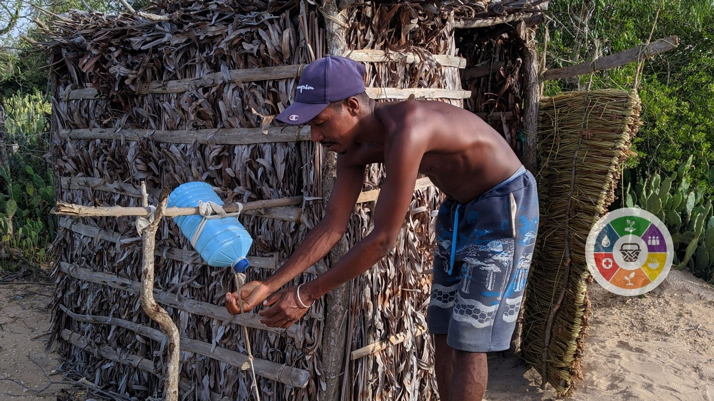

Projet WASH et Nutrition Communautaire
Ce projet vise à améliorer l'accès à l'eau potable, à l'assainissement et à l'hygiène (WASH) tout en luttant contre la malnutrition dans les communautés rurales de la région d'Analamanga.
Lieu
Région d'Analamanga, Madagascar
Partenaires
Ministère de l'Eau, communautés locales, UNICEF
Bénéficiaires
Plus de 5000 habitants, dont 60% de femmes et d'enfants
Objectifs du projet
- Améliorer l'accès à l'eau potable et à l'assainissement dans les zones ciblées.
- Sensibiliser les communautés aux bonnes pratiques d'hygiène et de nutrition.
- Renforcer les capacités des comités communautaires de gestion de l'eau.
- Réduire les cas de maladies liées à l'eau et la malnutrition infantile.
Activités clés
- Construction et réhabilitation de puits et de latrines communautaires.
- Organisation d'ateliers sur le lavage des mains et la gestion de l'hygiène menstruelle (GHM).
- Mise en place de jardins potagers scolaires pour promouvoir la nutrition.
- Formation des mères sur l'alimentation des nourrissons et des jeunes enfants (ANJE).
Résultats attendus
D'ici la fin du projet, nous prévoyons une augmentation de 70% de l'accès à l'eau potable, une réduction de 40% des maladies hydriques et l'autonomisation des communautés pour gérer leurs propres infrastructures WASH et nutritionnelles de manière durable.